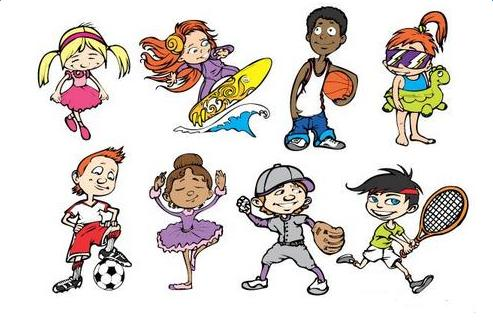

From an early age I’ve always been deeply interested in computing. It was my dad, introducing me to computer systems at his work place that first sparked this interest. I can always remember the feeling of wanting to know just how computers worked, why they worked and what else they could do. This interest never left me, only growing more profound and passionate with every new discovery I made. From communicating with an artificial intelligence to seeing the wonders of the Internet for the first time, computers have left me fascinated with just how much power yet mystery they hold. The A-Levels I chose to study have all helped me to develop both myself and my understanding of the subject. Maths and Physics have both helped to improve my analytical and evaluative skills. Physics, for example, has helped me to understand how certain parts of a computer function, and computing has given me a greater insight into the business aspects of the computer industry. My interest in computing has not been restricted to the classroom or college life. Within the last twelve months I’ve used the knowledge that I’ve gained over the past twelve years together with the help of my family to set up my own computer related business. This has given me a totally new perspective on how certain things function, and how business operates. The writing of a business plan was a totally alien experience for me, but over the course of 9 months I researched and planned, and finally when the plan was completed I was rewarded with the satisfaction of knowing that I had completed something that most people would never have the chance to do especially at my age.Through the setting up of the company and its subsequent running I have learnt many things, including how to balance tasks effectively, how to establish a critical teamwork and how to delegate tasks to get the job done quickly and efficiently. As well as spending time both studying and helping to run the business, I understand the importance of having time to relax. One of my hobbies that I enjoy learning to fly, and gaining my private pilots license. As a child I dreamed of becoming a pilot and luckily it is one dream that I’ve managed to follow. I love the freedom that flying gives me and the control that I have when in the air. Training for my private pilots license (PPL) has also involved me taking a lot of responsibility for the safety of those on board. I also enjoy both playing and watching tennis. I’ve played in various competitions before, and have helped to umpire junior matches at my club.I’m looking forward with great anticipation to the challenges that studying for a degree in computer science will bring.

My favorite sport is basketball. I often play basketball with my classmates after school and play with my friends on weekends. I like playing basketball because it can make me strong and health. When I play basketball, I forget all my worries and I can make lots of friends who have the same interest. In the evening when I finish doing my homework, I like reading because I can get lots of knowledge from books and the books can tell me more about China and the world. Books are our best friends and they can open our eyes,too. I like all kinds of books, story book, novels and so on. I have many hobbies, such as sports, singing, playing the violin and keeping a diary.In school, I often hear the P.E. teacher say, sports do good to one's health, and will make one live longer. So, I like sports very much. I go running at five o'clock in the morning, and after classes in the afternoon. I play pingpong with my friends. These sports have kept me healthy.At home, I like to sing and play the violin. I hope I will be a singer and a violinist① when I grow up. In order to attain these goals②,I go to the teacher's home for a lesson every Saturday, and practise singing and playing the violin every day. Busy as I am, I am quite happy.Of all my hobbies I like reading books best. In my bedroom there are nearly six hundred books. There are story books, textbooks, magazines, and others. When I grow up, I will serve the people with the knowledge I have learned from them. Diffrent people have diffrent hobbies I have a lot of hobbies like reading books,watching movies and so on.I like reading books because I get lots of know ledge I find more interesting things so I like reading diffrent kinds of books I also like watching movies I enjoy my leisure time so I usually watch movies in my free time it's makes me happy. I think watching movies and reading books are most interesting than any hobbies I love life.myhobbies make life colourful.I like chinese book.
Changchun (simplified Chinese: 长春; traditional Chinese: 長春; pinyin: Chángchūn) is the capital and largest city of Jilin Province.[5] Lying in the center of the Songliao Plain, Changchun is administered as a sub-provincial city, comprising 7 districts, 1 county and 2 county-level cities.[6] According to the 2010 census of China, Changchun had a total population of 7,674,439 under its jurisdiction. The city's urbanized (or metro) area, comprising 5 districts and 4 development areas, had a population of 3,815,270 in 2010 as the Shuangyang and Jiutai districts are not urbanized yet.[2] It is the biggest city in Northeast China, as well as the 9th biggest city in China. The name of the city means "long spring" in Chinese. Between 1932 and 1945, Changchun was renamed Hsinking (Chinese: 新京; pinyin: Xīnjīng; literally: "new capital") by the Japanese as it became the capital of the Japanese puppet state of Manchukuo, occupying modern Northeast China. After the foundation of the People's Republic of China in 1949, Changchun was established as the provincial capital of Jilin in 1954. Known locally as China's "City of Automobiles",[7] Changchun is an important industrial base with a particular focus on the automotive sector.[8] Because of its key role in the domestic automobile industry, Changchun was sometimes referred to as the "Detroit of China."[9] Apart from this industrial aspect, Changchun is also one of four "National Garden Cities" awarded by the Ministry of Construction of P.R. China in 2001 due to its high urban greening rate.[7][not in citation given]